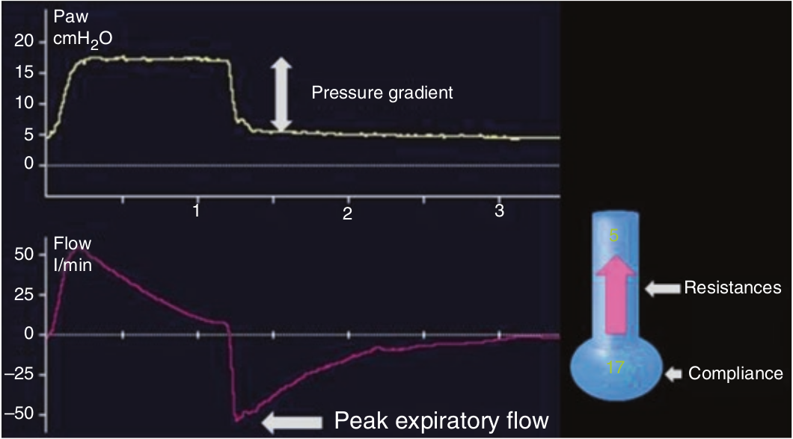

فشار حداکثر دمی بستگی به فشار ارتجاعی الاستیک و مقاومت بازدمی دارد. فشار ارتجاعی الاستیک همانند فشار رانش است که قبلا توضیح داده شد.
Peak expiratory flow = DP / REXP
فشار دمی بالا (PINSP)، حجم جاری زیاد، فشار پلاتوی بالا، و کمپلیانس استاتیک کم همگی سبب افزایش شدت جریان حداکثر بازدمی می گردند. برعکس مقاومت بالا و autoPEEP سبب کاهش شدت جریان حداکثر دمی می شوند.

شدت جریان حداکثر بازدمی به کدام عامل زیر بستگی ندارد؟
۱ - حجم جاری
۲ - تعداد تنفس
۳ - مکث پایان دمی
۴ - کمپلیانس استاتیک
۵ - فشار پلاتو